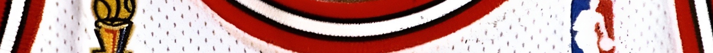

1995–96
Confirmed Population
1
Publicly Documented
1
Privately Verified
0
Total Documented
1
RESEARCH IN PROGRESS
Games Reviewed:
• Preseason: 0 of 0
• Regular Season: 10 of 82
• Postseason: 6 of 15
Last Updated: February 28, 2026
Population Summary
| Style | Confirmed | Public | Status |
|---|---|---|---|
| Home | 1 | 1 | ⏳ |
| Away | 0 | 0 | ⏳ |
Population reflects distinct season-worn garments (jerseys or full uniform sets) confirmed through research and documentation.

HOME

1995-96 Chicago Bulls NBA Finals jersey - exhibited at the Smithsonian Institution, 2017..
1995–96 Chicago Bulls NBA Finals home jersey worn during the 1996 NBA Finals, marking the first championship of the second three-peat.
Research & Provenance
No prior photo-matching documentation was associated with this jersey at the time of exhibition. Independent archival research conducted by The Michael Jordan Archive has conclusively photo-matched the jersey to six games. Three of those games occurred during the 1996 NBA Finals, culminating in Chicago’s first championship of the second three-peat.
Documentation
Photo Match Details
- Photo-Matched: Yes
- Games Photo-Matched: 3
- Photo-Matched By: MJA,
Documented Games
- June 5, 1996 — Seattle Supersonics
- June 7, 1996 — Seattle Supersonics
- June 16, 1996 — Seattle Supersonics